Gotenks SSJ3 est-il supérieur à Super Buu ? Si oui, dans quelle mesure ? La difficulté de ce combat tient moins à son issue qu'à sa construction. Toriyama nous présente d'abord un affrontement où chacun semble pouvoir rivaliser avec l'autre, avant de donner un ascendant manifeste à Gotenks. Pourquoi ?
Le raisonnement
01 — Deux brèches, un premier indice02 — Pourquoi le combat dure-t-il ?03 — Le seishin de Super Buu : une hypothèse04 — La fin du combat : une comparaison directe05 — Goku, témoin de la prise d’ascendant06 — Quand le rapport de force sert le récitDeux brèches, un premier indice
Lorsque Buu se retrouve enfermé dans La salle de l'Esprit et du TempsLe lieu où se déroule cette scène : Buu s'y retrouve enfermé au début, d'où la brèche vers le monde extérieur., il parvient à ouvrir une brèche vers le monde extérieur. Gotenks, une fois transformé en Super Saiyan 3La transformation de Gotenks dans ce combat. Elle est limitée dans le temps : il la perd avant d'avoir pu porter le coup de grâce., reproduit le même exploit.
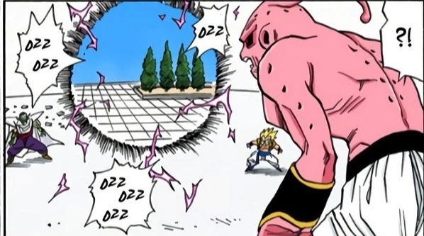
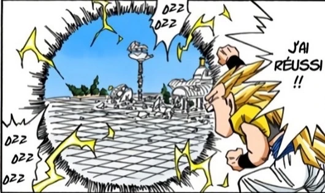
Il est intéressant de constater que Toriyama dessine la seconde ouverture nettement plus grande. Dans les deux cas, l'auteur utilise le même phénomène pour mettre en scène la puissance de ses personnages. Peut-on y voir un premier indice de la supériorité de Gotenks ? Oui, à condition de ne pas transformer une comparaison graphique, soumise au cadrage, en mesure du ki.
Dans l'étude du Shin Kikoho, nous avons pris l'évasion de Gotenks comme une métaphore des règles du récit, et non comme un exemple de boost magique (relire la métaphore).
Pourquoi le combat dure-t-il ?
Pourquoi alors le combat ne tourne-t-il pas immédiatement à l'avantage de Gotenks ? Pour comprendre ce que nous lisons, il faut d'abord comprendre ce que Toriyama s'amuse à dessiner.
Dans son entretien du Daizenshuu 4Guide publié en 1995 : il contient l'entretien avec Toriyama cité ici. (1995), Toriyama explique avoir pris plaisir à dessiner ce combat et à inventer des techniques dans l'esprit d'un manga humoristique. Traduction française de l'entretien.
Buu se transforme en ballon, Gotenks enchaîne les poses inutiles, Piccolo se retrouve à participer à une partie de volley-ball. L'auteur distribue les gags des deux côtés.
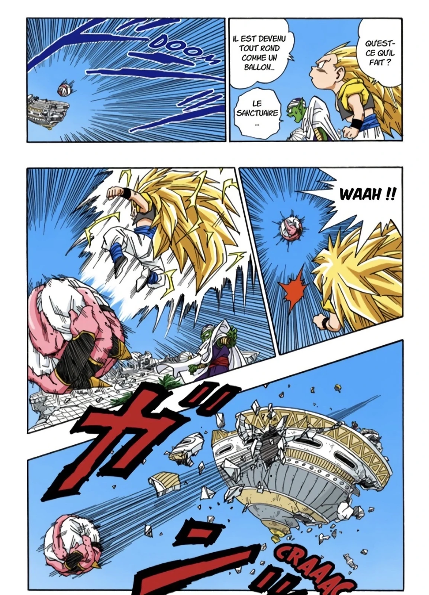
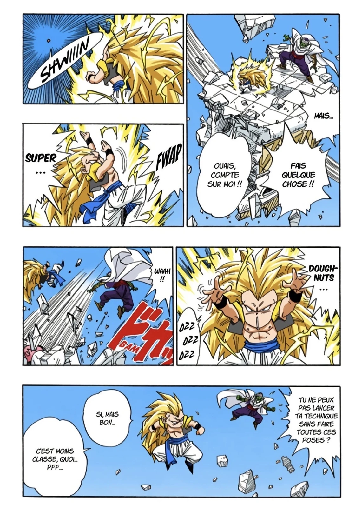
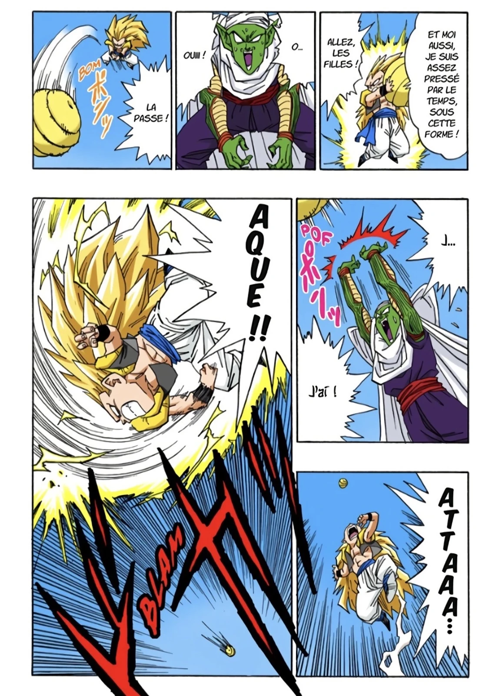
Gotenks reconnaît lui-même qu'il pourrait se passer de ses poses. Mais ce serait moins classe ! Si le personnage perd du temps alors que sa transformation est limitée, c'est précisément parce que Toriyama exploite son caractère et le potentiel comique de la situation.
La durée d'un combat ne constitue donc pas, à elle seule, une mesure de l'écart de puissance entre les combattants.
Le seishin de Super Buu : une hypothèse
Après plusieurs attaques de Gotenks, Piccolo introduit une distinction entre l'état physique et l'état psychologique de Buu. C'est ici que le japonais mérite notre attention.
体力的にはわからんが精神的には少し弱ってきている
Tairyokuteki ni wa wakaran ga, seishinteki ni wa sukoshi yowatte kite iru.
« Sur le plan physique, je ne saurais dire, mais sur le plan mental, il commence à s'affaiblir un peu. »
Traduction proposée à partir de la transcription reproduite dans cette analyse japonaise. La planche originale reste à contrôler.
Le terme employé est 精神的 (seishinteki), construit sur 精神 (seishin), l'esprit ou le mental. Il ne désigne pas le ki. Piccolo ne dit pas que l'énergie de Buu a diminué : il constate un affaiblissement psychologique et laisse la question physique ouverte.
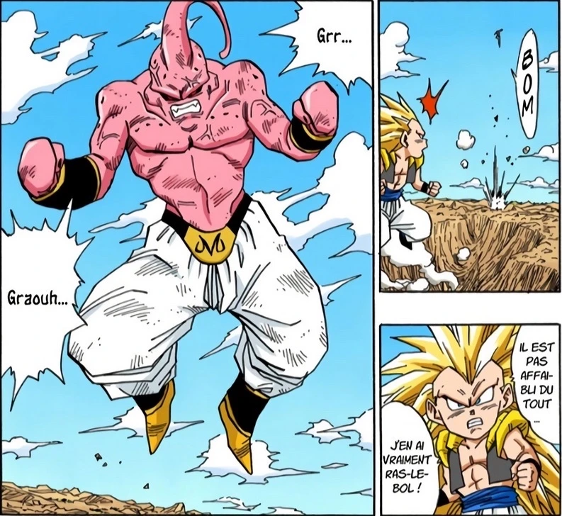
Or, RégénérationLa capacité de Super Buu à se reconstituer après les dégâts. Dans ce combat, elle donne l'impression que les coups ne diminuent pas durablement sa puissance. de Super Buu donne l'impression que les dommages subis ne diminuent pas durablement sa puissance dans ce combat. Comment expliquer alors le changement de rapport de force ?
Et si l'affaiblissement de son Seishin (精神)L'esprit, le mental. Piccolo l'oppose à l'état physique de Buu ; ce n'est pas le terme employé pour le ki. affectait sa capacité à mobiliser sa puissance ? Buu ne disposerait pas nécessairement de moins de ki ; son état mental pourrait l'empêcher de l'exploiter aussi efficacement.
Ce mécanisme n'est pas explicité par le manga. Il s'agit d'une piste de conciliation, non d'une règle établie de l'univers.
La fin du combat : une comparaison directe
Un combat présenté comme équilibré peut cacher un déséquilibre construit par la mise en scène : c'est la thèse de l'article Goku SSJ3 vs Gros Buu. Et pour situer ce que nous appelons « cercles » ici, voyez Les trois cercles de lecture.
Le changement de traitement graphique est particulièrement intéressant lorsque Buu lance un rayon par la bouche. Gotenks encaisse l'attaque ; il en ressort visiblement marqué, mais reste en état de combattre. Il réplique alors avec une technique similaire.
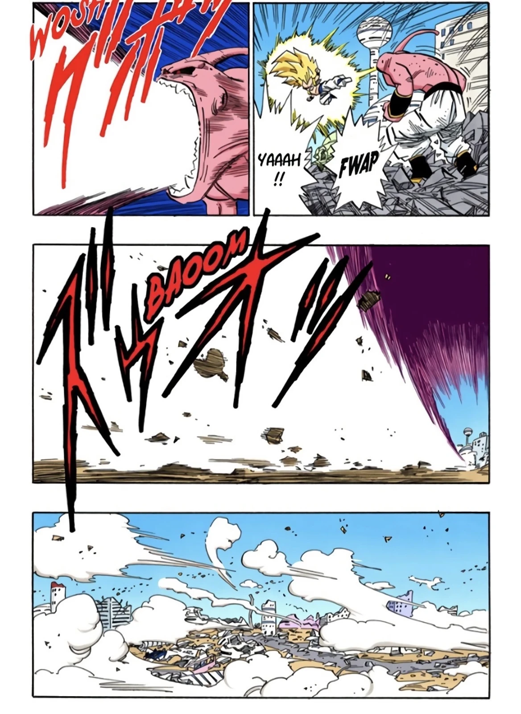
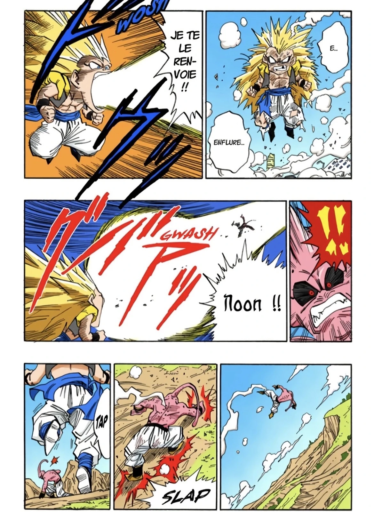
Comme pour les brèches dimensionnelles, Toriyama nous donne deux actions comparables, dont les résultats diffèrent. On ne peut pas savoir si les deux rayons contiennent exactement la même quantité de ki. Mais le contraste graphique est manifeste.
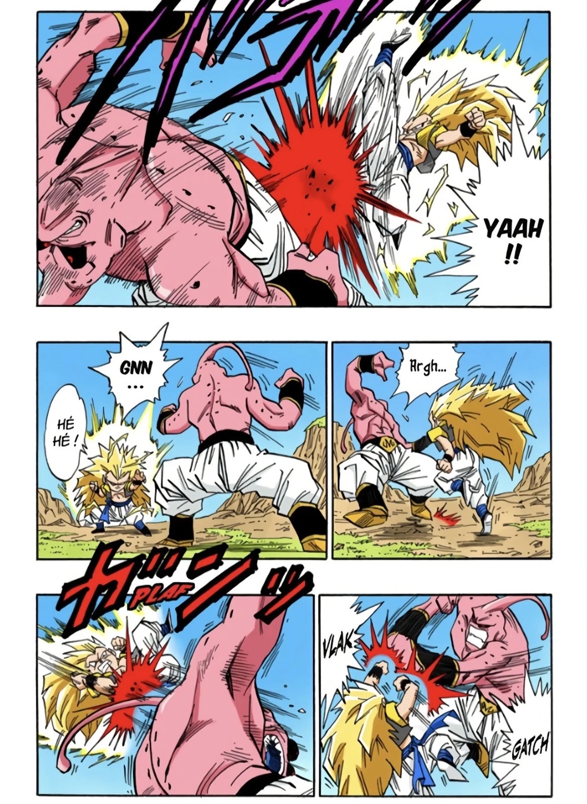
Buu tente encore de riposter ; Gotenks bloque ses attaques puis enchaîne. La fin de l'échange est représentée comme une domination, et non comme une égalité.
Goku, témoin de la prise d’ascendant
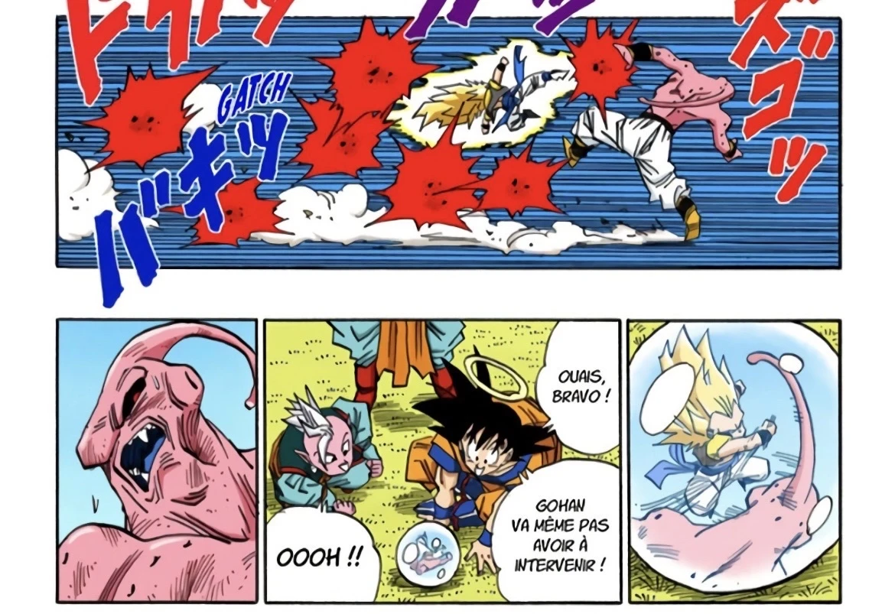
Goku lui-même estime que Gohan n'aura peut-être même pas besoin d'intervenir. Cette réaction extérieure au combat renforce considérablement la lecture de la scène : la perspective d'une victoire de Gotenks est désormais crédible.
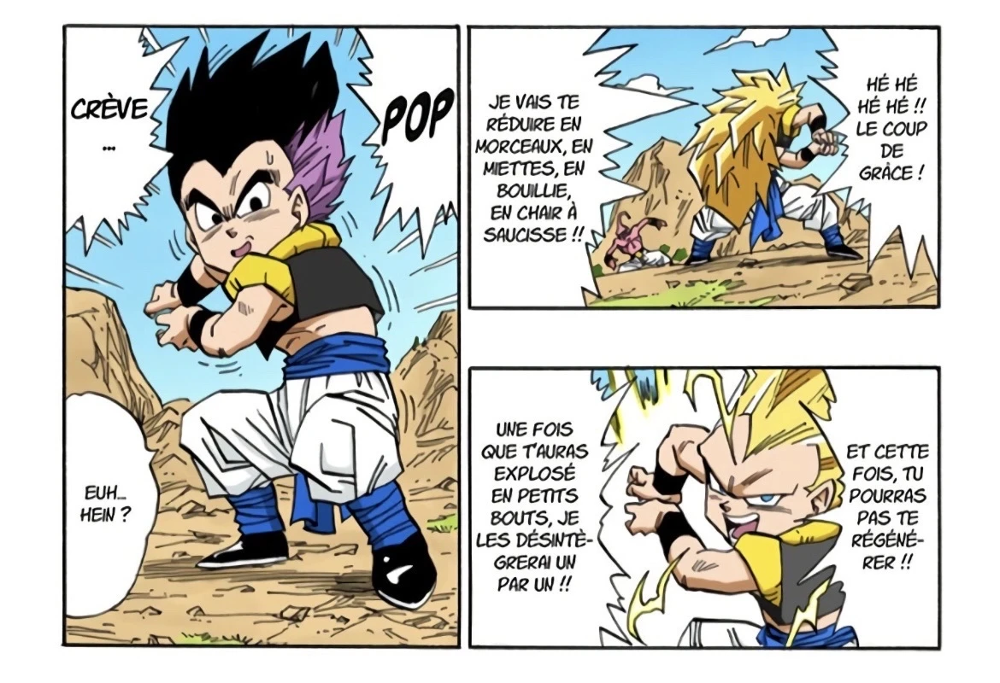
Gotenks explique comment il compte empêcher Buu de se régénérer : le fragmenter, puis désintégrer les morceaux. Il perd alors sa transformation, avant de pouvoir mettre son plan à exécution.
Toriyama ne nous montre pas Gotenks échouer à désintégrer Buu : il lui retire la possibilité d'essayer. Cela ne prouve pas qu'il aurait nécessairement réussi, mais la narration rend cette éventualité plausible.
Quand le rapport de force sert le récit
Sortons maintenant de l'univers. Pourquoi Toriyama fait-il évoluer le rapport de force à ce moment précis ?
Tant qu'il exploite le potentiel comique des personnages, il lui faut un semblant d'équilibre pour faire durer l'affrontement. Une fois les gags épuisés, il doit poursuivre l'histoire. Donner l'ascendant à Gotenks permet de faire croire à une résolution imminente ; lui retirer sa transformation permet de l'empêcher et d'ouvrir la voie à Gohan.
On peut donc lire le commentaire de Piccolo de deux façons : dans l'univers, il propose une piste psychologique ; du point de vue de la narration, il accompagne le revirement. L'auteur n'a pas besoin de mettre en scène une nouvelle transformation ou une augmentation explicite du ki pour modifier la dynamique de son combat.
Il est tentant d'imaginer que Toriyama s'est reposé sur cet affrontement humoristique pour réfléchir à la suite de son histoire. Cette hypothèse est compatible avec le changement de registre, mais l'entretien ne permet pas de dater le moment où il a décidé de réintroduire Gohan ou de faire intervenir Vegetto.
Gotenks SSJ3 est présenté comme supérieur à Super Buu à la fin de leur affrontement. L'écart n'est pas quantifiable, et le manga ne montre pas la réalisation du coup de grâce. Mais le contraste des attaques, la domination finale et le commentaire de Goku forment un faisceau d'indices convergents.
La question la plus intéressante reste celle du revirement. La puissance des personnages est aussi un outil au service de la narration.